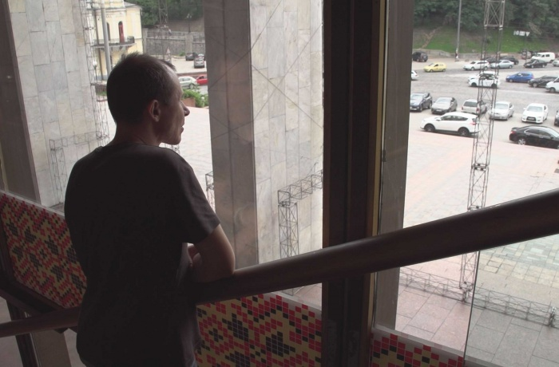

Зміст
Я хочу знімати документальне кіно — як це робити? Відповідаємо на головні питання разом з українськими документалістами
Чи обов’язково мати професійну освіту, аби зняти свій фільм? Які є інструменти для створення документального кіно? Де його потім показувати? Заборона як головний інформаційний партнер Civil Pitch 2.0 — конкурсу-лабораторії ідей короткометражного документального кіно на Docudays UA зібрала поради від режисерів і режисерок, які перемогли в першому конкурсі Civil Pitch.
До 18 лютого триває прийом заявок на конкурс Civil Pitch 2.0 від Міжнародного фестивалю документального кіно про права людини Docudays UA. Четверо переможців конкурсу отримають по 210 тисяч гривень на виробництво власних короткометражних документальних фільмів. Допомагати в роботі їм будуть міжнародні ментори, а прем’єра стрічок відбудеться на ювілейному, 20-му Docudays UA у 2023 році. Деталі ось тут.
Що дивитися людям, які хочуть займатися документальним кіно?
Юлія Кочетова, режисерка фільму «Поки ви всі зі мною» про один терапевтичний тренінг для секс-працівниць.
Пильно вдивлятися в життя. Витягнути навушники. Читати більше: художньої літератури, публіцистики — всього, де є нерв життя. Оточувати себе спільнотою тих, хто цікавиться тим самим. А вже потім — дивитися багато документального кіно. Є Docuspace і Current Time, є майстер-класи світових кінофестивалей — ковід все переніс в онлайн.
Олексій Радинський, режисер фільму «Колір фасаду: синій» про архітектора та художника Флоріана Юр’єва, який хотів урятувати створену ним київську «Летючу тарілку» від перетворення на частину торговельного центру.
Єдиний відомий мені спосіб навчитися робити фільми — це дивитися фільми. Що більше ви подивитеся, то більше у вас шансів зняти свій фільм. Є такий сленговий термін в кіно — надивленість. Думаю, це ключова якість. Бажано, звичайно, дивитися хороші, якісні, цікаві фільми, але це необов’язково. Якщо ви раптом подивитеся багато поганих фільмів, це теж піде на користь — буде зрозуміліше, як робити не варто.
Погані й хороші фільми — суб’єктивне поняття, але у мене є дві ознаки, за якими можна відрізнити один від іншого. В поганому документальному кіно є закадровий голос диктора і пафосна музика. Це не означає, що всі фільми з закадровим голосом і пафосною музикою погані. Проте я б порадив робити це тільки в крайньому разі.
Перегляд фільму — це набування певного досвіду: чи людей, які його зробили, чи людей, які в ньому показані. Досвід інших людей може стати нашим досвідом завдяки монтажу. Це хіба не перше, на що я звертаю увагу — як поєднані шматки цього досвіду. Не лише кадри, але й епізоди, персонажі, дії. Якщо він неякісно чи нецікаво змонтований, значить, на процес передачі досвіду глядачеві витратили недостатньо енергії.
Де та як вчитися майстерності?
- Юлія Кочетова:
-
Коли в тебе з’являється собака, ти думаєш, що будеш виховувати собаку. Але насправді потрібно виховувати себе. Тому що твій пес буде дзеркалити все: і хороше, і погане.
-
Коли в тебе з’являється собака, ти думаєш, що будеш виховувати собаку. Але насправді потрібно виховувати себе. Тому що твій пес буде дзеркалити все: і хороше, і погане.
-
Коли в тебе з’являється собака, ти думаєш, що будеш виховувати собаку. Але насправді потрібно виховувати себе. Тому що твій пес буде дзеркалити все: і хороше, і погане. Кадр з фільму «Поки ви всі зі мною»
-
-
Олексій Радинський: Зараз у кожного, хто має підключення до інтернету, немає проблем з тим, щоби здобути самоосвіту. На мою думку, це найкраща освіта. Можливо, для когось цього буде недостатньо і потрібно щось іще. Якщо йдеться про Україну, єдине місце, де можна отримати таку освіту, — це школа документалістики Сергія Буковського. Сам я там ніколи не був, але знаю роботи людей, які там вчилися. Мені здається, це точно краще, ніж навчатися в профільному університеті типу Карпенка-Карого чи Інституту культури. Інших таких місць в Україні я, чесно кажучи, не знаю.
-
Таїсія Кутузова: Я не маю документальної освіти, я закінчувала Школу журналістики УКУ. Вчитися професійно робити кіно я розпочала під час академії DocEmotion у Львові, де серед лекторів був, зокрема, Сергій Буковський. А потім посилила скіли на Civil Pitch. Я знала, як робляться фільми, але відточеної методики не мала.
Після цього фільмом зацікавився французький продюсер Стефан Сіоан, з яким ми зараз співпрацюємо. З ним ми пройшли на Eurasiadoc — це французька школа зі скриптрайтингу, де протягом тижня вчать писати сценарій. Після цього був онлайн-пітчинг у Вісбадені, де ти зустрічаєш професіоналів, розповідаєш їм свою історію, розумієш, наскільки на міжнародному рівні працюють чи не працюють твої ідеї. Ми виграли цей пітчинг.
-
Дмитро Тяжлов: Майстерність можна здобути тільки через власний шлях, пошуки та працю. Якщо ви подивитеся будь-якого майстра документального кіно, то побачите, що в кожного був свій шлях. Головне — зрозуміти, чого ви хочете. Якщо ви мислите про це як про спеціальність чи професію, це один шлях. Якщо ви мислите про це як про покликання та спосіб життя і розумієте, що без знімання жити не можете, то це зовсім інше. Якщо ви будете знати, це вам допоможе. Є Інститут ім. Карпенка-Карого, можна і в КАМА йти, можна і в Лодзь, можна йти в школу Вайди, Doc Nomads.

Як шукати теми для майбутніх робіт?
Юлія Кочетова:
Я щиро вірю, що ідеї, історії та герої/героїні приходять в той момент, коли ти до цього готова/готовий.
Документальний фільм трапляється, коли і тобі, і твоєму герою це однаково дуже потрібно. Я пильно вдивляюся
в життя. Одну зі своїх героїнь я знайшла у фейсбуці — просто побачила фото і мене наче вдарило струмом. Коли
я палаю якоюсь ідеєю, я шукаю спільних знайомих, людей зі сфери, тих, хто може бути дотичним до цієї ідеї. І
всіх запитую: а скажи, а порадь, а з ким зустрітись, і так далі.
Олексій Радинський:
Якщо ви шукаєте тему фільму, значить, ви щось робите не так. Тобто якась тема спочатку має вас доймати —
тоді можна вже робити фільм. Я погано уявляю собі процес пошуку теми. Думаю, значно менше шансів зробити
щось цікаве, якщо рухатися так. Життя нас бомбардує різними темами й ситуаціями, які, можливо, варті того,
щоби стати сюжетом фільму. Тому головне не шукати, а знаходити.
Чи можна зняти документальний фільм на телефон?
Юлія Кочетова: Залежно від ідеї. Якщо вона виправдана таким інструментом — чому ні. Якщо це питання малобюджетного кіно, то я б краще шукала спільників, у яких є своя техніка, навіть проста бездзеркальна камера.
Є кайфезний приклад доку, знятого на телефон — афганська історія Midnight Traveler. Сім’я біженців, автобіографічне тривожне road-movie, ніяких 4К та прайм-оптики. Але дуже точне попадання в нерв життя, доступ, інтимність. Правда — те, що є ключовим.
Дмитро Тяжлов: Можна не знімати взагалі, а спитати себе — чому ця тема, цей матеріал має бути фільмом. Зараз є великий вибір медіамистецтв. Це може бути вебсеріал, чи відеоблог, чи ютуб-канал. Чому це має бути фільмом? Треба зрозуміти, що камера — це інструмент, щоб відтворити на екрані свій задум. Тож слід запитати себе: наскільки цей інструмент відповідає моєму задуму? Все.